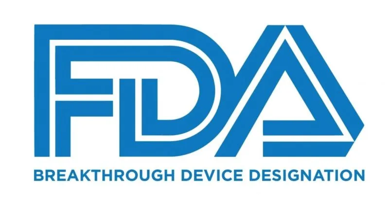

Products
產品情報
AI 影像一眼看見肉眼難以察覺的病灶


PANCREASaver® 助胰見®
台大醫院臨床驗證、台灣自主研發的智慧胰臟癌輔助偵測軟體，低劑量 CT 檢查中，為醫師標註可疑病灶，讓早期胰臟癌無所遁形。
- AI 病灶輔助標註自動分析 CT 影像，標註可疑胰臟病灶，輔助醫師決策
- 衛福部食藥署認證衛部醫器製字第 007946 號，醫療器材品質有保障
- 國際肯定美國 FDA 突破性醫材資格，台美 10 件專利保護
 TFDA 認證
TFDA 認證

FDA Breakthrough 台灣原創
台灣原創